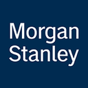

MSNYSE · Morgan StanleyCifras fundamentales: SEC EDGAR (10-Q, XBRL) y comunicados de resultados de Morgan Stanley, trimestre fiscal cerrado el 30 de junio de 2026 (2T FY2026) y los cuatro trimestres móviles anteriores. Capital regulatorio y resultado de CCAR a la fecha de su última publicación (jun-2026). Precio de mercado al 14-sep-2026. Este documento es 100% analítico — no constituye una recomendación de compra, venta ni mantenimiento. Ver disclosure completo al pie.
01 — Resumen Ejecutivo
Morgan Stanley reportó, el 16 de julio de 2026, ingresos netos de $21.3 mil millones para el segundo trimestre fiscal de 2026 (+27% interanual), utilidad neta de $5.6 mil millones, EPS diluido récord de $3.46, ROE de 20.7% y ROTCE de 26.6%. A diferencia de JPMorgan en el mismo panel —cuyo trimestre récord estuvo inflado por $5.6 mil millones de ganancias puntuales (Visa, revaluación de inversiones)—, la prensa financiera y la propia compañía describen el resultado de Morgan Stanley como de base amplia y sin partidas extraordinarias relevantes: Institutional Securities creció 44% interanual a $11.0 mil millones apalancado en su franquicia líder en Equities y un repunte en Investment Banking, Wealth Management sumó ingresos récord de $8.9 mil millones (+14%) con $148 mil millones de activos netos nuevos en el trimestre, e Investment Management creció 6% a $1.6 mil millones.
El ROTCE de 26.6% del trimestre no es un pico aislado: continúa una trayectoria de mejora que ya lleva tres años fiscales completos —12.8% en 2023, 18.8% en 2024, 21.6% en 2025— y que en el primer semestre de 2026 corre incluso más rápido (27.1% en 1T26, 26.6% en 2T26), muy por encima del objetivo de largo plazo de "20%+ a través del ciclo" que la propia gerencia de Ted Pick fijó como meta de la estrategia "Integrated Firm". La contrapartida es el precio: la acción cotiza a 3.9 veces su valor contable tangible —por encima incluso de su propio cierre de 2025 (3.6x), que ya era el punto más alto de los últimos tres años—, un múltiplo que, según nuestros propios modelos (Sección 13), exige un ROTCE sostenido de aproximadamente 35% de forma indefinida: un nivel que Morgan Stanley todavía no demostró en ningún año fiscal completo de su historia reciente, ni siquiera en el semestre más fuerte bajo análisis.
A esto se suma un contexto de gobierno corporativo ya resuelto —Ted Pick combina los cargos de CEO (desde ene-2024) y Chairman (desde ene-2025) sin la incertidumbre de sucesión que sí pesa sobre JPMorgan— y una estructura accionaria particular: Mitsubishi UFJ Financial Group (MUFG) mantiene un 24% de las acciones desde su inversión de rescate de 2008, bajo un acuerdo de pasividad con la Reserva Federal que limita su influencia de voto pese al tamaño de la posición (Sección 09). Este informe recorre el negocio completo —historia, segmentos, balance, capital regulatorio y comparables— bajo el mismo marco de valuación institucional (DDM + Residual Income + P/TBV) que el informe de JPMorgan Chase de este panel, antes de llegar, en la Sección 13, a la pregunta central: ¿cuánto de esta rentabilidad récord es estructural, y cuánto ya está pagando el mercado por ella?
02 — Historia y Evolución
Morgan Stanley nació en 1935 como escisión del negocio de banca de inversión de J.P. Morgan & Co. —la separación forzada por la Glass-Steagall Act de 1933, que obligó a J.P. Morgan a elegir entre banca comercial y banca de inversión—. Durante seis décadas operó como banco de inversión puro, hasta la fusión de 1997 con Dean Witter Discover & Co., que sumó una red minorista de corretaje y la tarjeta Discover (vendida años después) al negocio institucional original. La crisis financiera de 2008 fue el segundo punto de quiebre: para sobrevivir como banco de inversión independiente en medio del colapso de Lehman Brothers y Bear Stearns, Morgan Stanley se convirtió en sociedad holding bancaria (bank holding company) ante la Fed y recibió una inversión de rescate de $9 mil millones de Mitsubishi UFJ Financial Group (MUFG) a cambio de una participación accionaria de aproximadamente 21% —posición que, mediante conversión de instrumentos convertibles y recompras posteriores de la propia compañía sobre el resto del float, representa cerca del 24% del capital al cierre de este informe (Sección 09), la relación de gobierno corporativo más atípica de todo el panel de bancos de este desk.
Bajo el liderazgo de James Gorman (CEO 2010–2023), Morgan Stanley ejecutó la transformación estructural que define al banco actual: la compra de E*TRADE Financial por aproximadamente $13 mil millones (cerrada en octubre de 2020) y de Eaton Vance por aproximadamente $7 mil millones (cerrada en marzo de 2021) construyeron, en apenas seis meses, el "tercer pilar" de Wealth & Investment Management que, a la fecha de este informe, genera cerca de la mitad de los ingresos de la firma — reduciendo deliberadamente la dependencia histórica del negocio de trading e banca de inversión, mucho más cíclico. Gorman entregó el cargo de CEO a Ted Pick el 1° de enero de 2024, permaneciendo como Executive Chairman durante ese año; se retiró por completo del directorio a fines de 2024, y Pick asumió también la presidencia del directorio el 1° de enero de 2025 — una transición de liderazgo ya completada, sin la incertidumbre de sucesión que sí pesa sobre JPMorgan en este mismo panel (Sección 09).
Utilidad neta anual reportada, FY2021–FY2025, y TTM al cierre del trimestre de junio 2026. Fuente: SEC EDGAR (10-K/10-Q), XBRL NetIncomeLoss.
El gráfico de utilidad neta traza una "V" mucho más pronunciada que la de JPMorgan en el mismo período: 2021 ($15.0 mil millones) fue el pico de la era Gorman, impulsado por el mismo boom de trading y banca de inversión post-pandemia que atravesó a toda la industria; 2022 ($11.0 mil millones) y sobre todo 2023 ($9.1 mil millones, el punto más bajo de la serie) reflejan el shock de tasas de la Fed, una sequía prolongada de banca de inversión y los costos de integración de E*TRADE/Eaton Vance todavía sin madurar; y la recuperación de 2024 ($13.4 mil millones) y 2025 ($16.9 mil millones, récord histórico) coincide, año a año, con los dos primeros ejercicios completos de Ted Pick como CEO. El TTM a junio de 2026 ($20.2 mil millones) ya supera con holgura cualquier año fiscal completo de la serie. A diferencia de JPMorgan, donde cada año trae alguna partida puntual relevante que hay que aislar, la mejora de Morgan Stanley 2023→2025→1H26 es, en su mayor parte, una historia de mezcla de negocio y disciplina de costos —no de ganancias contables aisladas—, lo que es tanto una fortaleza real de la tesis como el motivo por el que la Sección 13 trata con cuidado especial cuánto de esta trayectoria ascendente es razonable extrapolar hacia adelante.
03 — Modelo de Negocio y Segmentos
Morgan Stanley opera en tres segmentos reportables: Institutional Securities —banca de inversión, trading (Equities y Fixed Income), y servicios institucionales de research y financiamiento—, Wealth Management —asesoramiento financiero, gestión de patrimonio y banca privada para clientes individuales, heredera en gran parte de la red de E*TRADE—, e Investment Management —gestión de activos institucional y de fondos, con Eaton Vance como su columna vertebral desde 2021—. A diferencia de JPMorgan, Bank of America, Wells Fargo o Citigroup, Morgan Stanley no es un banco comercial universal: no financia su balance principalmente con depósitos de consumo ni presta a gran escala a empresas y hogares — es, ante todo, un banco de inversión y una plataforma de gestión de patrimonio que también opera, desde 2008, bajo la estructura regulatoria de una sociedad holding bancaria G-SIB (recargo de capital 3.0%, Sección 06). Esta distinción es la razón por la que su grupo de comparables directos (Sección 08) es Goldman Sachs —y no Bank of America o Wells Fargo— y por la que este informe cita también a Charles Schwab como referencia cruzada.
| Segmento | Ingreso neto 2T26 | % del total1 | Var. YoY | Margen pre-tax |
|---|---|---|---|---|
| Institutional Securities | $11.04B | 51.2% | +44% | 38.9% |
| Wealth Management | $8.86B | 41.1% | +14% | 30.5% |
| Investment Management | $1.65B | 7.6% | +6% | 24.5% |
| Total firma (reportado) | $21.35B | 100% | +27% | ROE 20.7% / ROTCE 26.6% |
Fuente: comunicado de resultados de Morgan Stanley, 2T FY2026 (16-jul-2026). Los tres segmentos suman $21.54B; la diferencia con el ingreso neto total de la firma ($21.35B) corresponde a partidas de eliminación intersegmento/parent no desglosadas en el comunicado. 1% calculado sobre la suma de los tres segmentos. A diferencia de JPMorgan, Morgan Stanley no divulga ROE por segmento — reporta margen pre-tax (pre-tax income / ingreso neto del segmento), la métrica de rentabilidad que de hecho usa la compañía en sus propias presentaciones.
Ingreso neto por segmento, 2T FY2026. Institutional Securities es el segmento más grande y el más cíclico; Wealth Management aporta ya un 41% del ingreso con el margen más estable del grupo.
La composición del ingreso —no solo por segmento, sino por tipo— es la diferencia estructural más importante frente a JPMorgan: en el trimestre bajo análisis, el ingreso neto de intereses (NII) representó apenas 13.0% de los ingresos netos de la firma ($2.78 mil millones de $21.35 mil millones), con el 87.0% restante proveniente de comisiones, trading, banca de inversión y gestión de activos. En JPMorgan, por contraste, el NII representa cerca del 44% del ingreso total. Esto tiene dos consecuencias directas para el resto del informe: primero, Morgan Stanley es mucho menos sensible al ciclo de tasas de interés que un banco comercial puro (Sección 10); segundo, y más importante para la Sección 13, ningún método de valuación bancario estándar (DDM, Residual Income, P/TBV) deja de aplicar —la materia prima del negocio sigue siendo el balance regulatorio, no un flujo de caja libre separable—, pero el grupo de comparables tiene que ser uno de bancos de inversión/gestores de patrimonio, no de bancos comerciales universales.
04 — Desarrollos Recientes y Perspectiva
Ted Pick describe la estrategia actual de la firma como "Integrated Firm 2.0": usar la escala de Institutional Securities —research, acceso a mercados de capitales, estructuración— para distribuir productos sofisticados (alternativos, private credit, banca privada) a la enorme base de clientes de Wealth Management, en vez de operar los tres segmentos como silos independientes. El objetivo declarado por la gerencia es alcanzar $10 billones de activos totales de clientes (Wealth Management + Investment Management combinados) — Wealth Management por sí solo ya reportaba $9.3 billones de activos de clientes hacia el primer trimestre de 2026. Dentro de esa base, los activos alternativos representan apenas 5% y el private credit específicamente solo 1% — Pick calificó al private credit como en un "momento adolescente" con un largo camino de expansión por delante, un vector de crecimiento futuro que ningún método de valuación de la Sección 13 captura de forma explícita.
A diferencia del trimestre de JPMorgan analizado en este panel —inflado por $5.6 mil millones de ganancias puntuales de Visa y revaluación de inversiones—, la cobertura de prensa y el propio comunicado de resultados de Morgan Stanley no señalan partidas extraordinarias relevantes en 2T26: el crecimiento de 44% en Institutional Securities responde a una franquicia de Equities líder de mercado con impulso continuo en Investment Banking, y Wealth Management sumó $148 mil millones de activos netos nuevos y $39 mil millones de activos que generan comisión —crecimiento orgánico de la base de clientes, no una revaluación puntual—. Esto hace que el ROTCE de 26.6% del trimestre sea, en principio, una señal más limpia de la rentabilidad recurrente del negocio que el 29% reportado por JPMorgan en el mismo período — aunque la pregunta de cuánto de la fortaleza de Institutional Securities depende de un ciclo de mercados de capitales excepcionalmente favorable (y por lo tanto no permanente) sigue siendo la misma (Sección 10).
Con el rendimiento del Treasury a 10 años en 4.96% —prácticamente en línea con el 4.95% citado en el informe de JPMorgan de este panel— y el NII representando solo 13% del ingreso de Morgan Stanley, el impacto directo de un movimiento de tasas sobre el resultado consolidado es estructuralmente menor que en un banco comercial universal. Dicho esto, las tasas sí importan para Morgan Stanley por una vía distinta: los depósitos de barrido (sweep deposits) de la red de Wealth Management —que crecieron a $446.1 mil millones al cierre de 2T26, +7.3% en apenas seis meses— son una fuente de fondeo cuya economía (spread entre lo que paga el banco y lo que gana invirtiendo esos depósitos) depende directamente del nivel y la forma de la curva de tasas, igual que en cualquier otro banco.
05 — Estados Financieros
| Métrica | 1T FY26 (mar-26) | 2T FY26 (jun-26) | TTM (a jun-26) |
|---|---|---|---|
| Ingreso neto de intereses (NII) | $2.70B | $2.78B | $10.83B |
| Ingreso no financiero (noninterest income) | $17.88B | $18.57B | $67.21B |
| Gastos no financieros | $13.47B | $13.90B | $51.68B |
| Expense efficiency ratio (más bajo = mejor) | 65.5% | 65.1% | 66.2% |
| Provisión para pérdidas de crédito | $82M | $110M | $216M |
| Utilidad neta | $5.57B | $5.58B | $20.16B |
| EPS diluido | $3.43 | $3.46 | $12.37 |
| ROE | ~20%1 | 20.7% | — |
| ROTCE (reportado) | 27.1% | 26.6% | — |
| ROA (anualizado, propio) | ~1.5% | ~1.4% | ~1.4% |
Fuente: SEC EDGAR XBRL (10-Q 1T y 2T FY2026) y comunicados de resultados. Expense efficiency ratio = gastos no financieros / ingresos netos, tal como lo reporta la propia compañía (68% para el año completo 2025, en línea con el cálculo propio de este desk). 1ROE de 1T26 no divulgado explícitamente por la compañía en el comunicado — estimado por este desk a partir de utilidad neta anualizada sobre patrimonio promedio del trimestre.
A diferencia del informe de JPMorgan de este panel, donde la mejora puntual de la eficiencia ratio en 2T26 respondía casi enteramente a una ganancia no recurrente, la caída sostenida de la eficiencia ratio de Morgan Stanley —de 77% en el año fiscal 2023 a 71% en 2024, 68% en 2025 y 65%-66% en los dos trimestres de 2026 bajo análisis— es una mejora estructural de varios años, apalancada en el apalancamiento operativo de la base de clientes de Wealth Management (más activos gestionados sin un crecimiento proporcional de la planta de asesores) y en la disciplina de costos de la era Pick. Es, en ese sentido, un patrón mucho más parecido al de una compañía de software escalando margen que al de un banco comercial tradicional.
Ingreso neto de intereses (NII) trimestral, últimos seis trimestres reportados — nunca más de 13%-15% del ingreso total de la firma en ningún trimestre de la serie.
Expense efficiency ratio trimestral, últimos seis trimestres — la trayectoria descendente (más eficiencia) es estructural, no el efecto de una partida puntual como en el trimestre de JPMorgan de este panel.
06 — Balance, Calidad de Activos y Capital Regulatorio
| Métrica (al 30-jun-2026) | Valor |
|---|---|
| Activos totales | $1.675T |
| Depósitos totales | $446.07B |
| Préstamos (financing receivables, netos) | $289.32B |
| Reserva para pérdidas de crédito (ACL) | $1.25B |
| Patrimonio neto (equity, incl. preferidas) | $116.33B |
| Goodwill | $17.11B |
| Valor libro por acción (BVPS) | $67.80 |
| Valor libro tangible por acción (TBVPS) | $53.18 |
Fuente: SEC EDGAR XBRL (10-Q 2T FY2026) y comunicado de resultados. BVPS/TBVPS son cifras propias de la compañía (no-GAAP), usadas como ancla de valuación en la Sección 13. La reserva de crédito es baja en relación con el tamaño de activos de la firma porque el libro de préstamos de Morgan Stanley es mayoritariamente crédito garantizado con valores (securities-based lending) a clientes de Wealth Management, no préstamos comerciales o de consumo sin garantía — un perfil de riesgo de crédito estructuralmente distinto al de JPMorgan/BAC/WFC/C.
La provisión para pérdidas de crédito de Morgan Stanley ($110 millones en 2T26, $216 millones en los últimos doce meses) es un orden de magnitud menor, en proporción al tamaño de sus préstamos ($289.3 mil millones), que la de un banco comercial universal como JPMorgan ($2.5 mil millones por trimestre sobre $1.5 billones de préstamos) — la reserva total (ACL) de apenas $1.25 mil millones representa una cobertura de 0.43% sobre el libro de préstamos, frente a cifras de 1.5%-1.7% típicas de un banco comercial. La explicación no es que Morgan Stanley tenga mejores prácticas de suscripción: es que su libro de préstamos es, en su gran mayoría, crédito garantizado con carteras de inversión de clientes de Wealth Management (securities-based lending) y financiamiento a contrapartes institucionales con colateral — categorías de riesgo de crédito estructuralmente mucho más bajo que una hipoteca residencial o una tarjeta de crédito de consumo. Esto no es un riesgo a monitorear del mismo modo que en un banco comercial; es, en cambio, una razón adicional por la que comparar a Morgan Stanley contra JPMorgan/BAC/WFC/C en esta dimensión específica sería engañoso (Sección 08).
Morgan Stanley cerró el trimestre con un ratio CET1 (Common Equity Tier 1) de 14.8% bajo el enfoque Standardized (16.5% de Tier 1 total) sobre activos ponderados por riesgo (RWA) de $589.4 mil millones ($528.2 mil millones de riesgo de crédito, $61.2 mil millones de riesgo de mercado — este último componente, ausente o marginal en un banco comercial puro, refleja directamente el tamaño de la mesa de trading de Institutional Securities). Como banco de importancia sistémica global (G-SIB), Morgan Stanley carga un recargo de capital (GSIB surcharge) de 3.0% —igual al de Bank of America y Goldman Sachs, por debajo del 4.5% de JPMorgan—. Sumando el mínimo regulatorio base (4.5%), el Stress Capital Buffer (SCB, en 4.3% y vigente hasta octubre de 2027, congelado por la demora de la Reserva Federal en adoptar nuevos modelos de stress test) y el recargo GSIB (3.0%), el requerimiento total de CET1 se ubica en 11.8% — lo que deja a Morgan Stanley con un colchón real de ~3.0 puntos porcentuales por encima del mínimo exigido, equivalente a unos $17.7 mil millones de capital excedente sobre ese requerimiento a la fecha de corte de este informe.
CET1 actual (Standardized) vs. requerimiento regulatorio total (mínimo 4.5% + Stress Capital Buffer 4.3% + recargo GSIB 3.0%). El colchón de ~3.0 puntos es capital que el banco podría, en teoría, devolver a accionistas sin comprometer su posición regulatoria.
El SCB de Morgan Stanley (4.3%) es más alto que el de JPMorgan (2.5%) pese a que su GSIB surcharge es más bajo (3.0% vs. 4.5%) — un resultado del propio modelo de stress test de la Fed, que pondera con fuerza la exposición al riesgo de mercado y de trading de un banco de inversión puro. La Reserva Federal anunció el 4 de febrero de 2026 que no adoptaría los modelos revisados de stress test antes de correr la prueba de 2026, dejando el marco regulatorio vigente —y el SCB de Morgan Stanley— congelado hasta el resultado del próximo ciclo, en 2027.
07 — Retorno de Capital
| Métrica | Valor |
|---|---|
| Dividendo trimestral actual (pagado hasta 2T26) | $1.00/acción |
| Dividendo trimestral desde 3T26 (tras CCAR 2026) | $1.15/acción (+15%) |
| Autorización de recompra vigente (reautorizada jul-2026) | $20.000M, sin vencimiento |
| Recompras netas en 2T26 | $1.5B (8M acciones) |
| Payout de dividendo puro (sobre EPS TTM $12.37) | ~32% |
| Payout total LTM (dividendo + recompras, cálculo propio) | ~61% |
Fuente: comunicados de resultados 3T25-2T26. Payout total LTM = (dividendos pagados + recompras netas de los últimos cuatro trimestres) / utilidad neta TTM — cálculo propio de este desk a partir de cifras divulgadas trimestre a trimestre, ya que Morgan Stanley no publica un payout total agregado como sí lo hace JPMorgan.
La brecha entre el payout de dividendo puro (~32%) y el payout total (~61%) es, otra vez, la razón por la que el Método 1 de la Sección 13 (Dividend Discount Model) tiene que descontar el payout total y no solo el dividendo en efectivo — aunque la brecha de Morgan Stanley (29 puntos) es algo menor que la de JPMorgan (45 puntos): Morgan Stanley devuelve una porción más moderada de su exceso de capital vía recompras, reflejo de un banco que todavía está en fase de reinversión (private credit, tecnología, la propia expansión de "Integrated Firm 2.0") en lugar de devolver la abrumadora mayoría del capital excedente. Con la acción cotizando a 3.9 veces su valor libro tangible, aplica el mismo matiz técnico que en JPMorgan: cada recompra a este múltiplo es, en rigor, levemente dilutiva para el TBVPS restante, aunque sigue siendo acretiva para el EPS y el ROTCE mientras el capital usado no tenga mejor destino alternativo dentro del banco.
08 — Comparables de Industria
El comparable directo de Morgan Stanley no es un banco comercial universal: es Goldman Sachs, el otro banco de inversión de escala G-SIB de EE.UU., con una mezcla de negocio (trading, banca de inversión, gestión de activos/patrimonio) y un marco regulatorio prácticamente idénticos. Bank of America, Wells Fargo y Citigroup —los comparables de JPMorgan en este panel— no aplican aquí: son bancos comerciales cuyo negocio depende mayoritariamente del margen de intereses sobre depósitos y préstamos, la categoría que representa solo 13% del ingreso de Morgan Stanley.
| Compañía | P/TBV | P/E fwd. | ROTCE (últ. trim.) | Eficiencia | CET1 |
|---|---|---|---|---|---|
| Morgan Stanley (MS) | 3.89x | 15.9x | 26.6% | 65% | 14.8% |
| Goldman Sachs (GS) | 2.99x | 14.6x | 25.5% | 57.4% | 12.9% |
Precios de mercado al 14-sep-2026 (Yahoo Finance). P/TBV y P/E fwd. de GS reconciliados con el informe institucional propio de GS de este panel (informes/gs.html, cierre 11-sep-2026) — ROTCE, eficiencia y CET1 de GS del comunicado de resultados de 2T FY2026. TBVPS/EPS FY26E de MS de fuente propia (Sección 06/12).
P/TBV comparado — Morgan Stanley cotiza con una prima de ~34% sobre Goldman Sachs, pese a que ambos bancos muestran un ROTCE reciente muy similar (26.6% vs. 25.5%).
A diferencia de JPMorgan —cuya prima sobre BAC/WFC/C tenía una contrapartida clara en un ROTCE muy superior al del resto del panel—, la prima de Morgan Stanley sobre Goldman Sachs (3.89x vs. 2.99x P/TBV, +30%) es más difícil de justificar solo con la tabla de arriba: el ROTCE del trimestre es prácticamente el mismo (26.6% vs. 25.5%) y Goldman Sachs de hecho opera con una eficiencia ratio mejor (57.4% vs. 65%). La prima de Morgan Stanley probablemente refleja que el mercado está pagando, en parte, por la narrativa de "Integrated Firm" y por la calidad de los ingresos recurrentes de Wealth Management (menos cíclicos que el trading puro de Goldman), no solo por la rentabilidad del trimestre bajo análisis — un matiz que retomamos en el Método 4 de la Sección 13.
Como referencia cruzada —no como comparable directo, dado que su modelo de negocio y su marco de capital regulatorio son distintos—, Charles Schwab (SCHW), el gestor de activos/broker más grande de EE.UU. por activos de clientes, cotiza a un P/TBV de 7.62x (P/E fwd. 14.85x, ROE 20.3%) — un múltiplo mucho más alto que el de Morgan Stanley o Goldman Sachs sobre una rentabilidad similar o incluso menor, porque el modelo de Schwab es más "asset-light" (menos capital regulatorio consumido por unidad de ingreso). Esta comparación no entra al blend de valuación de la Sección 13 —mezclar un múltiplo de 7.62x con uno de 2.99x produciría un promedio sin significado económico—, pero sirve como evidencia cualitativa de hacia dónde podría desplazarse el múltiplo de Morgan Stanley si su mezcla de ingresos sigue inclinándose hacia Wealth Management en los próximos años.
09 — Gobierno Corporativo y Estructura Accionaria
Fuentes: Banking Dive, Bloomberg, Morningstar/fintel.io, WEEX, MarketBeat (ownership), comunicados de resultados y earnings calls de Morgan Stanley (objetivo de ROTCE, sucesión de CEO, jul-2026).
La posición de MUFG merece un tratamiento aparte porque es, con diferencia, la relación de gobierno corporativo más atípica del panel de bancos de este desk: un banco extranjero controla cerca de una cuarta parte del capital de Morgan Stanley desde hace casi dos décadas, sin que eso se haya traducido en control operativo o board seats dominantes —el acuerdo de pasividad firmado con la Reserva Federal en 2008 existe precisamente para permitir la inversión sin convertir a Morgan Stanley en una subsidiaria de facto de un banco japonés—. Es, en la práctica, una alianza estratégica de capital de larguísimo plazo más que una posición de un inversor institucional pasivo convencional, y vale la pena que cualquier lector que analice la estructura accionaria de Morgan Stanley la distinga de las posiciones de Vanguard o BlackRock en la misma tabla.
10 — Registro de Riesgos
| Riesgo | Descripción | Severidad |
|---|---|---|
| Reversión del ciclo de mercados de capitales | El crecimiento de 44% de Institutional Securities depende de un entorno excepcionalmente favorable para trading (Equities) y banca de inversión — actividad históricamente cíclica que ya empujó a la baja el resultado de 2022-2023 una vez, y podría hacerlo de nuevo. | Alta |
| Compresión de múltiplo desde niveles ya elevados | MS cotiza a 3.89x valor libro tangible, muy por encima incluso de su propio cierre de 2025 (3.58x) y de la mediana histórica de 10 años (~1.94x, aproximada) — cualquier decepción de resultados en un contexto de valuación ya exigente puede gatillar una corrección de múltiplo mayor a la revisión de estimados en sí. | Alta |
| Concentración accionaria de MUFG | El 24% de MUFG, aunque sujeto a un acuerdo de pasividad con la Fed, es una posición sin equivalente en el resto del panel — cualquier cambio en la relación estratégica entre ambas firmas (venta parcial, renegociación del acuerdo) sería un evento de gobierno corporativo de alto impacto. | Media |
| Basel III Endgame / capital regulatorio futuro | La reglamentación final en EE.UU. sigue pendiente tras la demora anunciada por la Fed en feb-2026; un aumento futuro del SCB o del recargo GSIB reduciría el colchón de capital "libre" para recompras. | Media (largo plazo) |
| Dependencia de la ejecución de "Integrated Firm 2.0" | Buena parte de la tesis de crecimiento futuro (private credit, alternativos, venta cruzada institucional→wealth) depende de una estrategia todavía en etapas tempranas ("momento adolescente", en palabras del propio CEO) — la ejecución podría ser más lenta de lo que el precio actual sugiere. | Media |
| Sensibilidad de los depósitos de barrido a tasas | Los depósitos de Wealth Management ($446.1B, +7.3% en 1H26) son una fuente de fondeo cuya economía depende del spread de tasas — un escenario de recortes agresivos de la Fed comprimiría ese spread. | Media |
| Capital y liquidez | CET1 Standardized de 14.8%, ~3.0 puntos por encima del requerimiento total. No es un riesgo activo. | Baja |
11 — Catalizadores
| Fecha | Evento |
|---|---|
| 16 Jul 2026 | Reporte de resultados del segundo trimestre fiscal (2T FY2026) — utilidad récord, ya ocurrido y desarrollado en este informe. |
| A partir de 3T 2026 (pago nov-2026) | Primer pago del dividendo elevado a $1.15/acción (+15%), tras el resultado del stress test de la Fed de junio de 2026. |
| En curso desde jul-2026 | Ejecución de la autorización de recompra por $20.000 millones, sin vencimiento — el ritmo trimestral de ejecución es una señal directa de la lectura interna del management sobre el valor de la acción al precio actual. |
| Mediados oct 2026 (estimado) | Reporte de resultados del tercer trimestre fiscal (3T FY2026) — primera oportunidad de confirmar si la fortaleza de Institutional Securities de 1H26 se sostiene o normaliza. |
| Próxima reunión de la Fed (sep-2026) | Decisión de tasas — impacto indirecto vía spread de los depósitos de barrido de Wealth Management (Sección 04). |
| En curso, sin fecha fija | Progreso hacia el objetivo de $10 billones de activos de clientes y expansión de private credit dentro de la estrategia "Integrated Firm 2.0" — cualquier actualización cuantitativa de management sería un catalizador directo para el Método 3 de la Sección 13. |
| Jun 2027 (estimado) | Próximo ciclo de CCAR/stress test de la Fed — determina el Stress Capital Buffer vigente desde oct-2027 en adelante. |
12 — Modelo Financiero Proyectado y Momentum de Estimados
Antes de construir nuestra propia proyección en la Sección 13, vale la pena mostrar qué proyecta el consenso de Wall Street con datos agregados de mercado.
| Métrica | TTM (a jun-26) | FY2026E | FY2027E |
|---|---|---|---|
| Ingresos netos | $78.04B (real) | $82.66B (consenso) | $86.50B (consenso) |
| Var. YoY | — | +17.6% | +4.6% |
| EPS diluido | $12.37 (real) | $12.97 (consenso) | $13.64 (consenso) |
| Var. YoY EPS | — | +27.0% | +5.2% |
Fuente: stockanalysis.com (consenso de 25 analistas, sep-2026). La desaceleración proyectada de FY2026 a FY2027 (+27.0% a +5.2% en EPS) refleja que el consenso no espera que el ritmo de 1H26 (Institutional Securities +44% interanual) se repita con la misma intensidad en el año siguiente.
| Métrica | Valor |
|---|---|
| Analistas cubriendo MS | 25 |
| Desglose (Strong Buy / Buy / Hold / Sell / Strong Sell) | 9 / 2 / 12 / 1 / 1 |
| Precio objetivo promedio (12 meses) | $236.62 |
| Rango de precios objetivo | $184.00 – $262.00 |
Fuente: stockanalysis.com (consenso de 25 analistas, sep-2026, posterior al reporte de 2T FY2026).
El precio objetivo promedio ($236.62) queda 14.5% por encima del precio de mercado ($206.58) — un upside implícito más alto que el de JPMorgan (5.5%) en el mismo panel, pero con una distribución de calificaciones mucho menos concentrada: apenas 9 de 25 analistas (36%) tienen la calificación más alta disponible, con 12 en "Hold" y dos en calificaciones negativas — la dispersión de calificaciones más amplia de cualquier informe de este panel hasta la fecha, coherente con un banco que ya viene de un re-rating pronunciado y donde la opinión profesional está más dividida sobre cuánto más puede correr el múltiplo.
13 — Valuación: Métodos y Fair Value
Igual que JPMorgan en este panel, Morgan Stanley no se valúa con un DCF de flujo de caja libre a la firma ni con EV/EBITDA: aunque su mezcla de ingresos es mucho más parecida a la de un gestor de activos que a la de un banco comercial, el balance regulatorio sigue siendo la materia prima del negocio —capital, RWA, depósitos de barrido—, no apalancamiento externo sobre un negocio operativo separable. Este informe usa el mismo marco que el de JPMorgan: un modelo de descuento de dividendos de payout total, un modelo de ingreso residual (residual income) anclado en el balance real, el múltiplo de P/TBV justificado por el ROTCE de la propia compañía, comparables directos (Goldman Sachs), reversión histórica del propio múltiplo, y el consenso de Wall Street. No hay WACC: solo un costo de equity (CAPM). El blend final pondera los seis métodos con los mismos pesos usados en el informe de JPMorgan (ver "Ponderación del blend" al cierre de esta sección).
Costo de equity (CAPM): Rf ≈ 4.96% (yield vigente del Treasury 10Y) + beta × ERP (~5.0%), con beta aproximado de 1.30 (no verificado en tiempo real — más alto que el de JPMorgan por el mayor peso de trading/banca de inversión en el ingreso de Morgan Stanley). Costo de equity Base ≈ 11.5%; Bear 12.5%; Bull 10.5%.
Igual que en JPMorgan, descontar solo el dividendo en efectivo subestimaría el capital que Morgan Stanley efectivamente devuelve a sus accionistas: el payout de dividendo puro (~32% del EPS TTM) es bastante menor que el payout total LTM (~61%, dividendo + recompras, Sección 07) — una brecha de 29 puntos, menor que la de JPMorgan (45 puntos) pero igual de decisiva para no subestimar el método. La versión correcta descuenta el payout total sobre el EPS de los últimos doce meses ($12.37, sin ajustes por partidas no recurrentes —a diferencia de JPMorgan, el trimestre de Morgan Stanley no tuvo ganancias puntuales relevantes que aislar, Sección 04—), proyectado a 5 años.
| Supuesto | Bear | Base | Bull |
|---|---|---|---|
| Crecimiento del EPS (año 1 → año 5) | 3% (const.) | 10% → 6% | 14% → 8% |
| Payout total (dividendo + recompras, año 1 → año 5) | 40% (const.) | 58% → 66% | 72% → 78% |
| Costo de equity | 12.5% | 11.5% | 10.5% |
| Crecimiento terminal | 2.5% | 3.2% | 3.8% |
| % del valor desde el terminal | 63% | 71% | 76% |
| Fair value por acción | $51.76 | $122.31 | $198.03 |
El escenario Bear ancla el payout total en 40% —por debajo del nivel de cualquier trimestre reciente— y congela el crecimiento de EPS en apenas 3%, un verdadero escenario de estrés que revierte buena parte de la mejora reciente. El escenario Base sube el payout gradualmente hacia 66%, apenas por encima del 61% actual, con un crecimiento de EPS que desacelera de 10% a 6% —coherente con la desaceleración que ya proyecta el propio consenso de la Sección 12 (+27.0% en FY26E a +5.2% en FY27E, aunque partiendo de una base distinta)—. El Bull sostiene el ritmo actual de payout y crecimiento cerca de sus niveles más recientes.
Partimos del valor libro tangible actual ($53.18 por acción) y sumamos el valor presente del "exceso de retorno" de cada año futuro — la diferencia entre el ROTCE que el banco genera y su costo de equity, aplicada sobre el capital tangible del año anterior—. El ROTCE de cada escenario se ancla en los dos últimos años fiscales completos (2024: 18.8%; 2025: 21.6%) —el "nuevo régimen" bajo Ted Pick como CEO— y no en el promedio de cinco años completo, que todavía pesaría el año de transición e integración de 2023 (12.8% de ROTCE, el más bajo de toda la serie). El crecimiento del capital tangible se ancla en el ritmo real observado del TBVPS (+9.7% en 2024, +11.4% en 2025, ritmo anualizado de ~13% en el primer semestre de 2026) — la misma lógica de "ventana reciente" que usa este desk para JPMorgan, aplicada acá a un banco cuyo cambio de régimen es incluso más pronunciado.
| Supuesto | Bear | Base | Bull |
|---|---|---|---|
| ROTCE (año 1 → año 5) | 15% → 13% | 22% → 20% | 25% → 22% |
| Crecimiento del TBVPS (año 1 → año 5) | 4% → 2% | 10% → 7% | 13% → 9% |
| Costo de equity | 12.5% | 11.5% | 10.5% |
| Crecimiento terminal | 2.5% | 3.2% | 3.8% |
| % del valor desde el terminal | 38% | 69% | 74% |
| Fair value por acción | $57.67 | $119.63 | $173.41 |
El escenario Bear parte de un ROTCE incluso más bajo que el peor año fiscal completo de la serie (2023: 12.8%) y lo deja erosionarse más, hacia 13% — un escenario de estrés genuino, no el "promedio histórico" del banco. El escenario Base asume que el ROTCE actual (26.6%-27.1% en 1H26) desacelera hacia el promedio real de 2024-2025 (~20.2%) — la lectura de que la mejora de esos dos años ya es el nuevo piso estructural, mientras el semestre bajo análisis es un pico por encima de ese piso, impulsado por un entorno de mercados de capitales excepcionalmente favorable (Sección 04) que puede no repetirse con la misma intensidad. El Bull ($173.41) todavía queda por debajo del precio de mercado ($206.58) — a diferencia de JPMorgan, donde el Bull del RIM ya superaba el precio de mercado.
| COE \ g terminal | 2.2% | 2.7% | 3.2% | 3.7% | 4.2% |
|---|---|---|---|---|---|
| 10.5% | $129.72 | $133.38 | $137.54 | $142.31 | $147.85 |
| 11.0% | $121.58 | $124.60 | $128.01 | $131.88 | $136.32 |
| 11.5% | $114.33 | $116.83 | $119.63 | $122.79 | $126.38 |
| 12.0% | $107.84 | $109.92 | $112.23 | $114.81 | $117.73 |
| 12.5% | $101.99 | $103.72 | $105.63 | $107.75 | $110.14 |
Grilla propia, recalculando el Residual Income Model del caso Base (mismas trayectorias de ROTCE y crecimiento de TBVPS declaradas arriba, TBV0 $53.18) para cada combinación COE/g — calibrada para reproducir exactamente la celda base ya reportada (COE 11.5%, g 3.2% → $119.63). Ni siquiera en la esquina más favorable de la grilla (COE 10.5%, g 4.2% → $147.85) el modelo se acerca al precio de mercado ($206.58).
El ancla de valuación más usada por la industria para bancos: P/TBV justificado = (ROTCE − g) / (Costo de
equity − g). Usando el mismo ROTCE sostenible de largo plazo del caso Base del Método 2 (20%, el promedio
real de 2024-2025) y el mismo costo de equity y crecimiento terminal (11.5% y 3.2%):
| Escenario | ROTCE sostenible | P/TBV justificado | Fair value (sobre TBVPS $53.18) |
|---|---|---|---|
| Bear | 13% | 1.05x | $55.84 |
| Base | 20% | 2.02x | $107.64 |
| Bull | 22% | 2.72x | $144.46 |
Este método admite además una lectura inversa, más honesta que etiquetar la acción de "cara" o "barata" sin más: resolviendo la misma fórmula para el ROTCE que justificaría el múltiplo actual de mercado (3.89x, al mismo costo de equity y crecimiento), el precio actual exige un ROTCE sostenido de aproximadamente 35% — un nivel que Morgan Stanley no alcanzó en ningún año fiscal completo de su historia reciente, ni siquiera en el mejor trimestre bajo análisis (27.1% en 1T26). La brecha es, en proporción, todavía más amplia que la de JPMorgan (donde el precio exige ~26% contra un piso reciente de 17%-20%): acá el precio exige ~35% contra un piso reciente de 18.8%-21.6%, una diferencia de 13-16 puntos porcentuales entre lo que el banco demostró sostener durante un año fiscal completo y lo que el mercado ya está pagando por que sostenga indefinidamente.
Aplicamos el P/TBV y el P/E forward de Goldman Sachs —el único comparable directo real de Morgan Stanley (Sección 08)— al TBVPS y al EPS forward de consenso de Morgan Stanley, respectivamente.
| Enfoque | Múltiplo de GS | Precio implícito |
|---|---|---|
| P/TBV (GS 2.99x) × TBVPS MS ($53.18) | 2.99x | $159.01 |
| P/E fwd. (GS 14.6x) × EPS FY26E MS ($12.97) | 14.6x | $189.36 |
| Comparables (promedio de ambos enfoques) | — | $174.19 |
Al tener un solo comparable directo real (a diferencia de JPMorgan, que promedia contra tres), este método pesa más en la práctica el juicio de si Goldman Sachs es, en sí mismo, un punto de referencia "barato" o "caro" en este momento del ciclo. Como en JPMorgan, el resultado confirma que Morgan Stanley cotiza con una prima sobre lo que pagaría el mercado por su comparable más directo —consistente con la Sección 08— pero el propio ejercicio de comparables no logra justificar en su totalidad esa prima al precio actual.
A diferencia de los métodos anteriores, este pregunta a qué múltiplo de valor libro tangible cotizó la propia acción de Morgan Stanley, en promedio, sin comparar contra otras compañías ni proyectar flujos futuros. Usamos una ventana de 3 años (cierres fiscales 2023-2025) en vez de la ventana de 10 años completa: el P/TBV de cierre de cada año fiscal fue 2.28x (2023, precio $93.25 / TBVPS $40.89), 2.80x (2024, $125.75 / $44.87) y 3.58x (2025, $179.08 / $50.00) —una trayectoria ascendente incluso más pronunciada que la de JPMorgan (1.99x→2.46x→3.05x)—, reflejo de un re-rating más marcado durante la misma ventana.
| Referencia histórica | Múltiplo P/TBV | Precio implícito (sobre TBVPS $53.18) |
|---|---|---|
| Cierre FY2023 | 2.28x | $121.28 |
| Cierre FY2024 | 2.80x | $149.04 |
| Cierre FY2025 | 3.58x | $190.47 |
| Promedio 3 años (2023-2025) | 2.89x | $153.60 |
| Mediana 10 años (referencia, ventana completa, aproximada) | ~1.94x | $103.17 |
Precios de cierre de año fiscal: Yahoo Finance (histórico diario). TBVPS de cada cierre: comunicados de resultados trimestrales de Morgan Stanley (4T de cada año). Mediana de 10 años aproximada de GuruFocus, mostrada como referencia de la ventana completa, no como el resultado del método.
Tomamos el promedio de 3 años (2.89x → $153.60) como el resultado de este método. El hallazgo relevante sigue siendo real incluso con la ventana ya corregida a la más favorable posible para la acción: el múltiplo actual (3.89x) queda por encima incluso del cierre de 2025 (3.58x), que ya era el punto más alto de toda la serie —y la brecha entre el múltiplo actual y el promedio de los tres años de re-rating (2.89x) es de todos modos la más amplia del blend después del consenso, pese a ser, por diseño, el método de mayor peso.
Como se detalla en la Sección 12: 25 analistas, precio objetivo promedio de $236.62, rango de $184.00 a $262.00. Es, de los seis métodos, el único que queda por encima del precio de mercado — el mismo patrón que en JPMorgan y en la mayoría de los informes de este panel, aunque acá con una dispersión de calificaciones notablemente más amplia (Sección 12), señal de que el consenso sell-side está menos unánime sobre Morgan Stanley que sobre JPMorgan en el mismo momento del ciclo.
"Football field" de valuación — rango bajo/alto de cada metodología. La línea roja marca el precio de mercado ($206.58); la línea azul marca el blend propio ($163.20). Solo el consenso Wall Street supera el precio de mercado.
El blend final no promedia los seis métodos en pie de igualdad: los que dependen de un supuesto de largo plazo/terminal (DDM, Residual Income Model y P/TBV justificado) pesan 10% cada uno, comparables y consenso 20% cada uno, y reversión histórica 30% — la misma ponderación usada en el informe de JPMorgan de este panel, por la misma razón (ver el informe de JPM para el detalle completo de la auditoría que fundamenta estos pesos).
| Método | Fair value (caso Base) | Peso |
|---|---|---|
| Dividend Discount Model de payout total — Base | $122.31 | 10% |
| Residual Income Model — Base | $119.63 | 10% |
| P/TBV justificado por ROTCE — Base | $107.64 | 10% |
| Comparables (Goldman Sachs) | $174.19 | 20% |
| Reversión histórica (P/TBV, promedio 2023-2025) | $153.60 | 30% |
| Consenso Wall Street (precio objetivo promedio) | $236.62 | 20% |
| Blend ponderado | $163.20 | 100% |
El blend ponderado da $163.20 por acción, un 21.0% por debajo del precio de mercado ($206.58) — una brecha del mismo orden de magnitud que la de JPMorgan (19.9%), pero por una razón distinta y, en cierto sentido, más difícil de reconciliar: en JPMorgan, comparables y reversión —antes de sus correcciones metodológicas— también estaban deprimidos por el mismo problema de ventana que el DDM/RIM, y corregirlos acercó el blend al mercado. Acá, ya aplicamos desde el inicio la ventana correcta (ROTCE 2024-2025, reversión de 3 años) a los seis métodos, y el resultado sigue siendo un blend materialmente por debajo del precio de mercado: cinco de los seis métodos quedan entre $107.64 y $174.19 (52%-84% del precio de mercado), y solo el consenso Wall Street queda arriba (+14.5%). Un valor esperado por probabilidad explícita sobre los tres escenarios de los dos métodos intrínsecos (DDM y RIM promediados por escenario, ponderados 25% Bear / 45% Base / 30% Bull) da $123.83 por acción, muy en línea con sus respectivos casos Base. La lectura que queda no es "Morgan Stanley está mal gestionado" ni "el negocio se deterioró" —todo lo contrario, la Sección 05 documenta una mejora estructural real y sostenida de varios años—, sino algo más específico: el mercado paga actualmente por un ROTCE de ~35% sostenido de forma indefinida (Método 3), mientras el propio track record de Morgan Stanley —el mejor de su historia reciente— todavía no superó el 21.6% en ningún año fiscal completo. La dispersión entre escenarios sigue siendo genuina —de $51.76 en el Bear del DDM a $198.03 en el Bull del mismo método, que todavía no supera el precio de mercado— porque la pregunta de fondo (¿cuánto de la mejora 2024-2026 es estructural y cuánto es un ciclo de mercados de capitales excepcionalmente favorable?) todavía no tiene una respuesta cerrada, no porque el modelo esté mal calibrado.
14 — Limitaciones del Modelo
Entre el 38% y el 76% del valor de los dos métodos intrínsecos (DDM de payout total y RIM) en sus tres escenarios proviene del valor terminal, no de los flujos explícitos de los primeros cinco años — ambos modelos son, por construcción, sensibles a supuestos de larguísimo plazo sobre el nivel de rentabilidad sostenible del banco. Tanto el RIM/P-TBV justificado como la reversión histórica de este informe anclan su supuesto central en los últimos dos-tres años (2024-2025 para el ROTCE, 2023-2025 para la reversión) en vez del promedio de cinco o diez años —una decisión deliberada, justificada porque Morgan Stanley viene sosteniendo un piso de ROTCE genuinamente más alto desde la llegada de Ted Pick como CEO en 2024, pero que también tiene un costo: es una ventana todavía más corta que la de tres años fiscales completos que usa el informe de JPMorgan de este panel (que dispone de 2023-2025 completo bajo el mismo régimen), porque el "nuevo régimen" de Morgan Stanley solo tiene dos años fiscales completos de historia (2024 y 2025) al momento de este informe — si 2026 resulta ser, en retrospectiva, el pico de un ciclo de mercados de capitales excepcionalmente favorable más que el nuevo nivel permanente, tanto el RIM/P-TBV como la reversión de este informe estarían, en algún grado, sobreestimando la rentabilidad sostenible. El Residual Income Model además ancla el crecimiento del capital tangible en tasas observadas durante apenas dos años y medio de historia, no un ciclo completo de tasas de interés y de mercados de capitales. El EPS forward usado en comparables y momentum (Sección 12) proviene de consenso público real, pero la comparación FY2026 vs. FY2027 ya incorpora la expectativa de que el ritmo de Institutional Securities de 1H26 no se repita con la misma intensidad — cualquier sorpresa adicional en cualquier dirección de esa actividad afectaría la comparación más de lo que sugiere la desaceleración ya incorporada en las cifras de consenso. El modelo no desagrega la valuación por segmento de negocio (Institutional Securities/Wealth Management/Investment Management) pese a que la Sección 03 documenta perfiles de margen y de ciclicidad muy distintos entre segmentos — un ejercicio de suma-de-las-partes, sobre todo si valuara Wealth Management de forma independiente como gestor de patrimonio puro (a la manera de Charles Schwab, Sección 08), probablemente arrojaría un resultado distinto al de un balance consolidado. Finalmente, ninguno de los seis métodos cuantifica de forma explícita el valor opcional de la estrategia "Integrated Firm 2.0" ni del objetivo de $10 billones en activos de clientes (Sección 04), ni el riesgo de gobierno corporativo específico que representa la concentración accionaria de MUFG (Sección 09): son factores cualitativos que pueden mover el múltiplo de mercado en cualquier dirección independientemente de lo que digan los fundamentos.